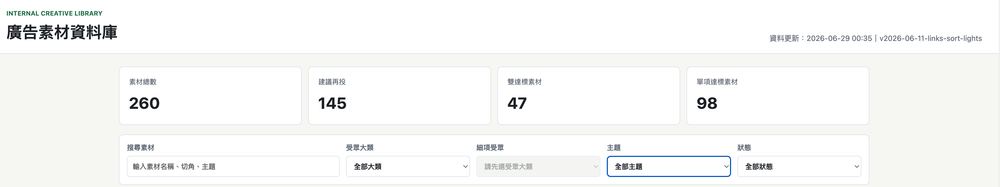
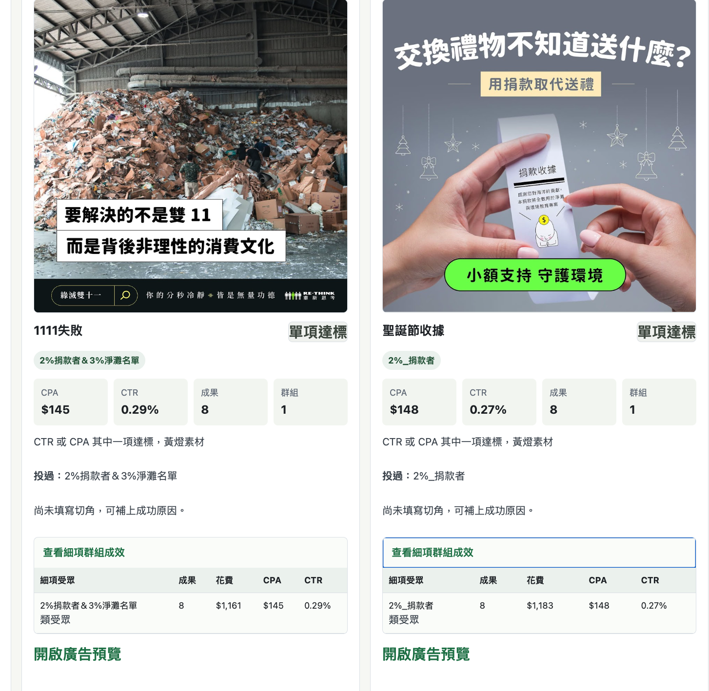

內部工具｜行銷自動化
廣告素材資料庫
為了解決素材更新速度慢、舊素材難以判斷是否適合復投的問題，我協助建立內部廣告素材資料庫，讓團隊能從素材與受眾兩個方向快速回查高成效案例。
專案背景
廣告素材需要持續更新，但當素材量變多時，過去表現好的素材、受眾與切角容易散落在不同報表裡。團隊如果想重新利用舊素材，往往需要花時間回找資料，也不一定能快速判斷哪些素材值得優先參考。
解決痛點
我把資料庫的核心任務設定為「幫助團隊更快找到可復用的優秀素材與受眾」，並將資訊拆成總覽、素材與受眾三個層級，讓不同需求的人都能用最短路徑找到資料。
01找素材快速篩選達標素材與可復投素材
02找受眾回查不同受眾下的素材表現
03看成效整合 CPA、CTR、成果與投放群組
分頁架構
Index 總覽集中顯示素材總數、建議再投素材、雙達標素材與單項達標素材，並提供搜尋、受眾大類、主題與狀態篩選。
素材頁面以卡片方式呈現素材圖、投放切角、CPA、CTR、成果與群組，讓團隊快速判斷素材是否值得參考。
受眾頁面依受眾分類整理素材表現，協助比較不同受眾對內容切角與素材形式的反應。
介面展示
以下為公開可展示的介面截圖，實際資料庫連結與完整投放資料不公開。

我的角色
- 整理素材、文案切角、受眾分類與成效欄位，讓資料能被一致紀錄與查找。
- 協助規劃 Index、素材頁面與受眾頁面的資訊層級，降低團隊回查舊素材的時間成本。
- 使用 Google Apps Script 與 Google Sheets 建立資料整理流程，協助把素材管理從人工翻找轉為可篩選的資料庫。
學習與反思
這個專案讓我更理解，行銷自動化不只是把資料放進工具，而是要先釐清團隊真正需要做的判斷。當資料能依照使用情境被拆成總覽、素材與受眾，工具才會真的幫助團隊加快決策。